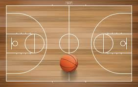

กีฬาบาสเกตบอลเป็นการแข่งขันระหว่างสองทีม ทีมละ 5 คนในสนาม โดยสามารถมีผู้เล่นสำรองได้สูงสุด 7 คน การแข่งขันแบ่งออกเป็น 4 ควอเตอร์ โดยแต่ละควอเตอร์มีระยะเวลา 10 นาทีตามกติกาของ FIBA หรือ 12 นาทีตามกติกาของ NBA เมื่อจบควอเตอร์ที่ 2 จะมีการพักครึ่งเป็นเวลา 15 นาที หากคะแนนเสมอกันเมื่อจบควอเตอร์ที่ 4 จะมีการต่อเวลา (overtime) ครั้งละ 5 นาที จนกว่าจะมีผู้ชนะ วัตถุประสงค์ของเกมคือการทำคะแนนให้มากกว่าคู่แข่งโดยการโยนลูกบาสเกตบอลลงห่วงของฝ่ายตรงข้าม หากผู้เล่นสามารถยิงลูกเข้าห่วงจากระยะในเส้น 3 คะแนนจะได้ 2 คะแนน หากยิงจากนอกเส้น 3 คะแนนจะได้ 3 คะแนน และหากยิงลูกโทษจากเส้นฟรีโธรว์จะได้ 1 คะแนนต่อ 1 ลูก
ในแต่ละการครอบครองบอล ทีมจะต้องทำการบุกและยิงลูกภายในเวลา 24 วินาที และเมื่อได้บอลมาจะต้องนำบอลข้ามครึ่งสนามภายใน 8 วินาที หากทำไม่ได้จะเสียบอลให้ฝ่ายตรงข้าม การเริ่มการแข่งขันจะใช้การโยนลูกกลางสนาม หรือที่เรียกว่า Jump Ball โดยผู้เล่นสองคนจากแต่ละทีมจะกระโดดแย่งบอลเมื่อกรรมการโยนลูกขึ้นกลางอากาศ ผู้เล่นสามารถเคลื่อนที่ไปพร้อมกับลูกบอลได้โดยการเลี้ยงลูก (dribbling) ซึ่งเป็นการเด้งลูกกับพื้นด้วยมือเดียว หากผู้เล่นจับลูกแล้วเดินหรือวิ่งโดยไม่เลี้ยงลูกจะถือว่าผิดกติกา เรียกว่า "เดินทาง" (Traveling) และถ้าผู้เล่นเลี้ยงลูก หยุด แล้วเลี้ยงอีกครั้งจะถือว่าผิดกติกาเช่นกัน เรียกว่า "Double Dribble" ในเกมบาสเกตบอลมีการฟาวล์เมื่อผู้เล่นทำการปะทะกันผิดกติกา เช่น ผลัก ดึง ตี หรือขวางทางคู่แข่งโดยไม่ถูกต้อง หากผู้เล่นคนใดทำฟาวล์ครบ 5 ครั้งในเกม (ตามกติกา FIBA) หรือ 6 ครั้ง (ตาม NBA) จะหมดสิทธิ์ลงเล่นในเกมนั้นต่อไป หากทีมใดทำฟาวล์สะสมเกิน 4 ครั้งในหนึ่งควอเตอร์ ทีมตรงข้ามจะได้รับสิทธิ์ยิงลูกโทษทุกครั้งที่ถูกฟาวล์
ในการเล่น ผู้เล่นไม่สามารถใช้เท้าหรือตั้งใจใช้ขาเตะลูกได้ และห้ามปัดลูกที่กำลังจะตกลงห่วงในแนวลง เพราะจะถือว่าเป็นการแทรกแซงการทำคะแนนหรือที่เรียกว่า "Goaltending" หากลูกบาสหรือตัวผู้เล่นสัมผัสกับพื้นที่นอกสนาม ไม่ว่าจะเป็นพื้นหรือเส้นขอบสนาม จะถือว่า "ลูกออก" และฝ่ายตรงข้ามจะได้ครองบอล การยิงลูกโทษหรือฟรีโธรว์จะได้จากการถูกฟาวล์ในจังหวะยิง หรือตามกติกาการสะสมฟาวล์ของทีม โดยจะยิงจากเส้นฟรีโธรว์ที่อยู่ห่างจากห่วง 4.6 เมตร โดยไม่มีผู้เล่นฝ่ายตรงข้ามขวางการยิง ทั้งหมดนี้คือกติกาเบื้องต้นของกีฬาบาสเกตบอลที่ใช้ในการแข่งขันทั่วไป เพื่อให้เกมดำเนินไปอย่างยุติธรรมและปลอดภัย
เว็บไซต์นี้จัดทำขึ้นเพื่อการศึกษา
© จัดทำโดย นาย เอกมนัส ปิ่นแสง เลขประจำตัว 11778 ห้อง 1/1 ทธ. วิทยาลัยเทคโนโลยีวานิชบริหารธุรกิจ